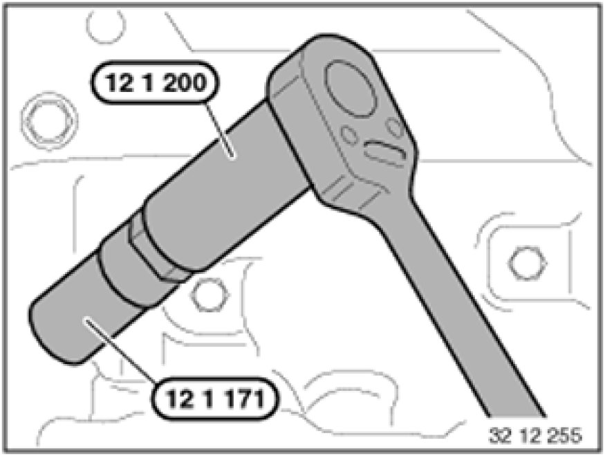

Spark Plug: Service and Repair
12 12 011 - Replacing all spark plugs (N42, N40, N46, N45, N52, N52K, N51)

Special tools required:
- 12 1 171
- 12 1 200 12 1 200 Torque Limiter 30 Nm

Necessary preliminary tasks:
- Switch off ignition
- Remove ignition coils Service and Repair
Important!
Wear protective goggles.
Oil and dirt particles may get into your eyes!
Clean spark plug slot with compressed air.

Unscrew spark plugs with special tool 12 1 171.
Installation Note:
Tighten down spark plugs with special tool 12 1 171 and special tool 12 1 200 12 1 200 Torque Limiter 30 Nm (torque limiter).
Without special tool 12 1 200 12 1 200 Torque Limiter 30 Nm, observe tightening torque.
Tightening torque, 12 12 1AZ [1][2]Specifications.